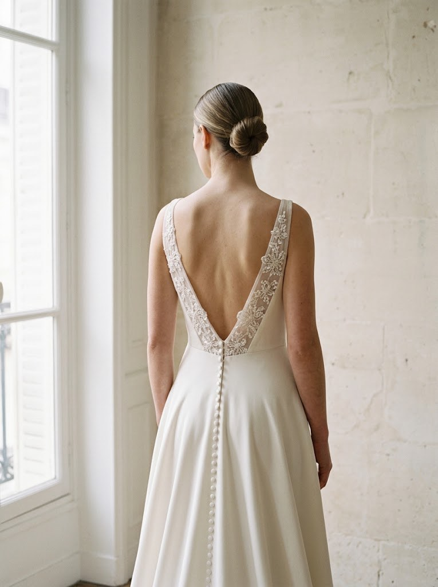
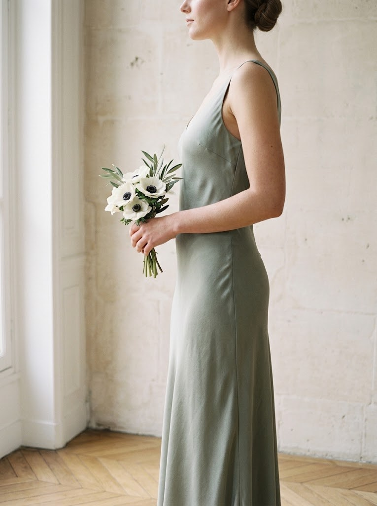
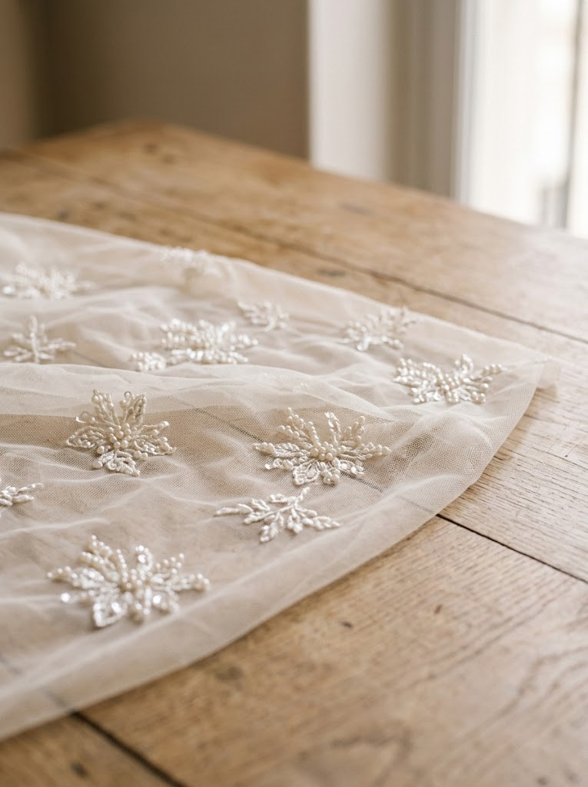
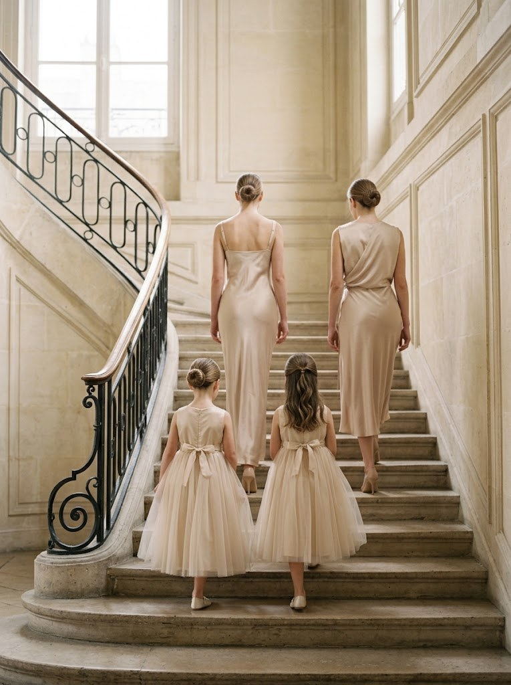
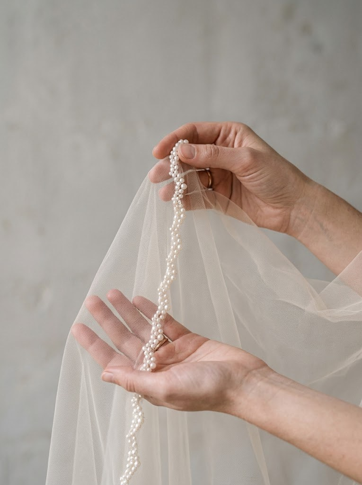

Quelques pièces








Parlons de votre projet
Le premier rendez-vous a lieu à l’atelier, à Paris, ou en visio.
Concevoir mon projet




Le premier rendez-vous a lieu à l’atelier, à Paris, ou en visio.
Concevoir mon projet